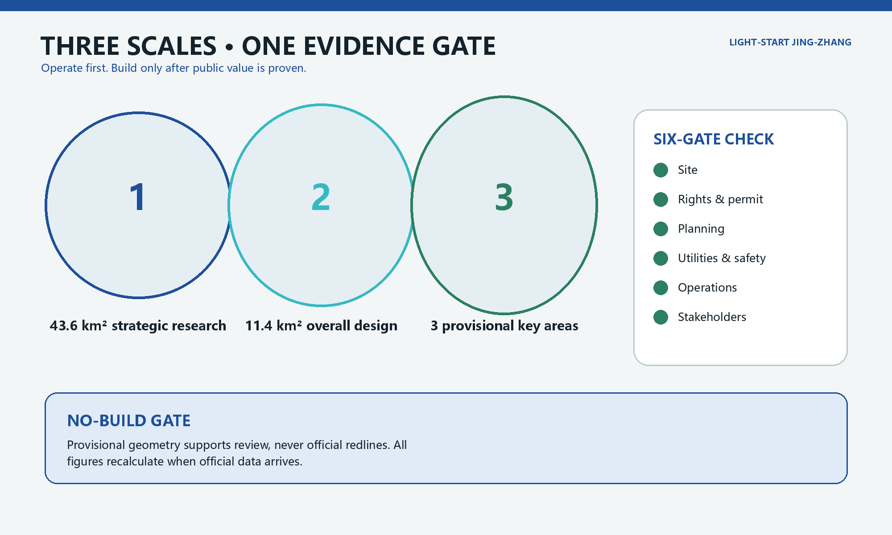
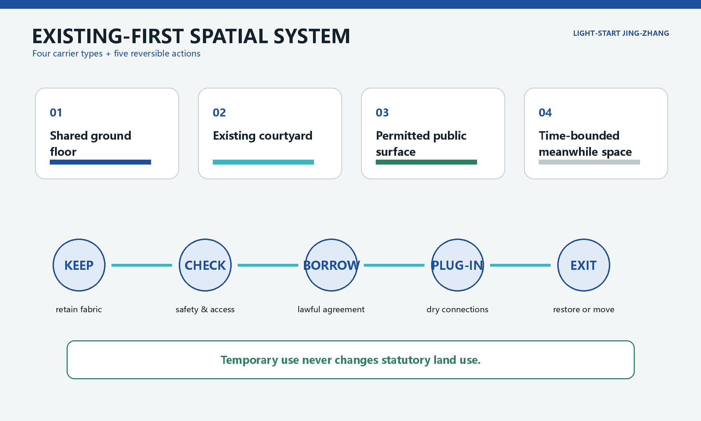
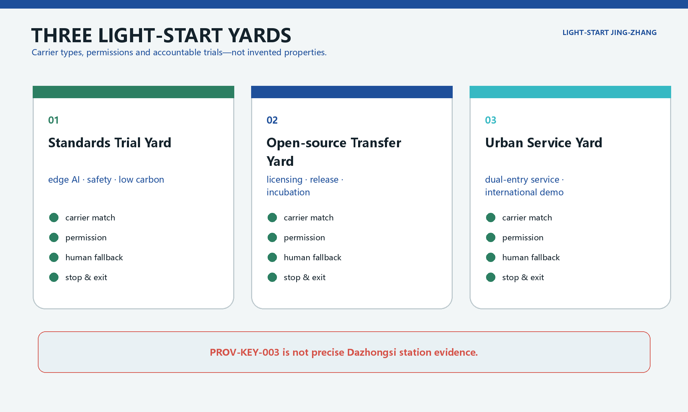
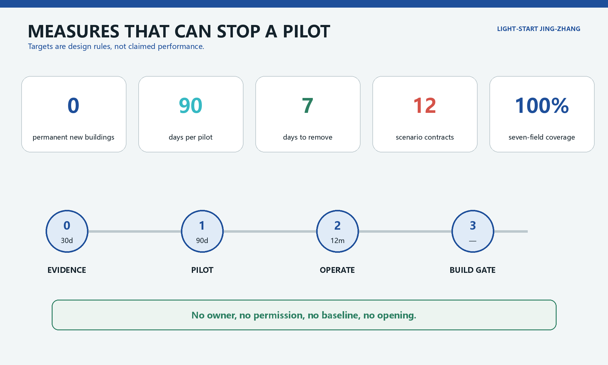
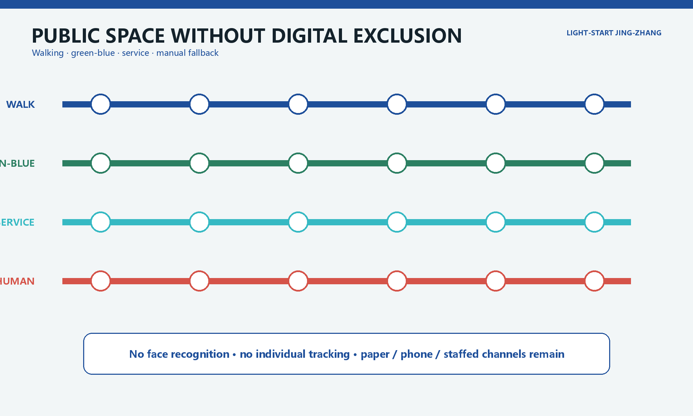

Light-Start Jing-Zhang / 轻启京张
Operate first and build later: activate lawful existing space with reversible components, accountable pilots and public exit rules before capital construction.
Light-Start Jing-Zhang
Operate first, build later; prove public value before fixing space in concrete. This is open-source conceptual research based on provisional repository geometry. It is not an official plan, site survey, statutory control or construction commitment.
Design basis and source inventory
The official announcement requires three working scales: 43.6 km² strategic research, about 11.4 km² overall urban design and about 368.4 ha across three detailed-design areas. It calls for an AI industrial ecosystem, urban renewal, transport and utilities, public space and implementable detailed design Source Standard. The proposal also addresses the Agent Taskbook's five functions, six tasks, open scenarios and operating requirements Source Standard.
GeoJSON, metrics and matrices remain the controlling review evidence. SITE-001 and all three PROV-KEY polygons are provisional constraints. In particular, PROV-KEY-003 is not evidence of the precise Dazhongsi station or four-quadrant intersection location Spatial data Spatial data Depth. Site conditions, ownership, existing buildings, statutory planning, utilities, fire, heritage and stakeholder evidence remain incomplete; all precision-sensitive work must be recalculated when official data arrives.

Core judgment: design temporariness as a civic institution
The costliest mistake is not failing to add a building; it is making an untested demand and unclear responsibility permanent. Light-Start establishes a No-Build Gate. Phases 0 and 1 permit no new permanent building, only reversible prototypes in lawfully usable existing space Metric Depth. A permanent intervention may be considered only after six gates pass: site evidence, rights and permission, planning, utilities/fire/accessibility, operating viability and stakeholder evidence.
The structure is “one line, three yards, two wings and four public ledgers.” The heritage-park corridor is the Light-Start Line. The three yards are a Standards Trial Yard at Zhongzhiyuan, an Open-source Transfer Yard at the AI Origin Community and an Urban Service Yard at Dazhongsi. The two wings exchange services with university-origin innovation and enterprise application resources; they are not invented new districts. Four ledgers disclose usable carriers, pilot contracts, objections and asset exits Depth Depth.
| Not this | Instead |
|---|---|
| Guess which real building is vacant | Publish lawful carrier requirements before matching a location |
| Prove “intelligence” through surveillance | Collect only the minimum aggregate data needed for a service |
| Make a successful pilot permanent by default | Stop automatically at expiry; renewal requires new evidence |
| Replace staff with AI | Keep an equally accessible staffed route for every public service |
Three-scale working framework
At the strategic scale, the proposal links university research, open-source collaboration, enterprise testing, public commissioning and international communication. At the overall-design scale, it identifies carrier types: lawful shared ground floors, existing courtyards, permitted activity surfaces and time-bounded meanwhile space. At the key-area scale, it designs carrier requirements, permissions and reversible kits rather than fabricating properties Spatial data Depth. Temporary operation never changes statutory land use Standard.

Building action follows five verbs: keep, check, borrow, plug in and exit. Existing fabric comes first; structure, fire, accessibility, heritage and utilities are checked; a lawful agreement enables use; dry-connected elements are installed; the site is restored or the asset moves. No real building receives a retain/alter/demolish conclusion without an inventory Spatial data Depth. Height, FAR and other statutory controls remain pending official data Metric Depth.
Strategic industry and future-city research
Light-Start creates three auditable paths. University and open-source work enters a 90-day service trial through the Origin Yard. Enterprise tools enter safety, energy and standards testing through the Standards Yard. Resident and visitor needs enter a public problem pool through a staffed service point at the Urban Service Yard. A trial opens only after the property manager, operator, technology provider and independent reviewer are named in its contract. The Haidian OPC consultation document is policy context only; it does not promise project funding or space Source.
The identity system uses four fields consistently in Chinese and English: opening date, expiry date, staffed route and asset's next destination. Visitors see responsibility and exit conditions, not only a demonstration. Railway memory is translated into a clear sequence and “next stop” asset logic, rather than nostalgic stage scenery.
Overall urban renewal and regulatory-depth design
Four carrier types are screened: lawful shared ground floors, existing paved courtyards, permitted surfaces in built public space and time-bounded space that will not delay a long-term project. Each candidate must disclose owner/manager, allowed use, term, cost and energy, fire, accessibility, nuisance, loading, insurance and reinstatement. A failed gate means no location. London's meanwhile-use guidance transfers only the method of defining duration, parties, funds, obligations and exit in advance; London property and planning law does not transfer to Beijing Source Source.
Repository geometry retains verifiable land-use, building, road and public-space layers; an activity licence is never presented as a land-use change Spatial data Standard. The provisional site area is used only for package consistency Metric.
Detailed design for the three key areas

Zhongzhiyuan: Standards Trial Yard
The required carrier is a separately closable existing test room plus a permitted edge of built green space. Movable benches, metering and a staffed safety point test edge AI, low-carbon equipment and assistive technology. Flood, river, energy, fire and site permissions must be checked. JTC's multi-party living-lab model informs trial governance, but its funding and regulatory structure do not transfer Source Spatial data.
Beijing AI Origin Community: Open-source Transfer Yard
The carrier type is a shareable ground floor plus bookable teaching or meeting space. Demountable acoustic screens, captioning, an open-source licence desk and staffed legal/accessibility hours support release and transfer. Models, data, licences and safety boundaries must be registered before public use. No campus data or university participation is assumed Spatial data Depth.
Dazhongsi: Urban Service Yard
Until official station, road and property data arrive, the design specifies only a carrier type: an existing transit-adjacent ground floor with safe indoor-outdoor queuing. Digital self-service and a staffed counter have equal visibility. Four-quadrant walking construction remains a transport-specialist task. The known PROV-KEY-003 location problem is disclosed and not used for distance or engineering claims Spatial data Depth.
AI ecosystem, personas and AI+ scenarios
Five inferred user groups are university researchers and students; startups; enterprise staff and international visitors; nearby residents; and older, disabled or non-smartphone users. They are hypotheses, not interview findings. Haidian's AI+elderly action plan informs a district-street-community demand-collection method, but provides no project authorization or data Source.
| ID / scenario | Carrier and users | 90-day measure | Stop, staffed fallback and exit |
|---|---|---|---|
| LS-01 Open-source clinic | Origin shared ground floor | 12 sessions; ≥80% issue closure | Stop on permission/privacy incident; staffed advice; equipment to teaching space |
| LS-02 Model safety bench | Standards test room | 3 industry validations; 100% risk register | Unregistered model rejected; safety officer; bench returns to store |
| LS-03 Low-carbon edge cabinet | Compliant equipment room | 100% energy/water baseline | Stop without capacity or baseline; staffed booking; cabinet removed |
| LS-04 Accessible device library | Shared across three yards | Staff help and fault log for every item | Stop after a severe safety event; staffed lending; transfer to lawful institution |
| LS-05 Dual-entry service corner | Urban Service carrier | Staffed-route visibility 100%; completion rates separated | Rectify if channel gap exceeds 20 points; staffed desk; remove within seven days |
| LS-06 Walking-break work orders | Permitted built-park point | Anonymous work orders only; ≥70% closure | Stop if tracking appears; paper/phone route; signs stored |
| LS-07 Rain-garden modules | Edge of existing hardscape | ≥95% maintenance attendance; no flood claim | Close on ponding/trip risk; manual inspection; modules move |
| LS-08 Shared lunch table | Lawful food/courtyard carrier | 100% food compliance; surplus by weight only | Stop on food incident or unresolved nuisance; staffed booking; tables reused |
| LS-09 Quiet evening workshop | Compliant interior | Complaint status public within five days | Stop after repeated time-limit breach; steward; acoustic kit removed |
| LS-10 International demo room | Existing Dazhongsi ground floor type | 100% bilingual equivalence and rights ledger | Unlicensed material removed; staffed translation hours; display kit stored |
| LS-11 Objection desk | Entrances to all yards | Anonymous status public in five working days Metric | Related pilot pauses without owner; paper/phone route; desk reused |
| LS-12 Asset next-stop desk | On/offline inventory | 100% destination record; seven-day removal target | No procurement without destination; manual audit; repair, transfer or recycle |
Every card requires owner, permission, baseline, KPI, stop rule, staffed fallback and exit; target coverage is 100% Metric Metric. AI is limited to booking, knowledge retrieval, aggregate issue classification and assisted translation. No facial recognition, individual tracking, credit scoring, automatic enforcement or unauthorized profiling is proposed Source.
Land use, building capacity and retain/alter/demolish method
Statutory planning and land-use controls remain authoritative; temporary agreements do not change land use. Current polygons support topology and concept discussion only and do not prove that a parcel can be leased, altered or built upon Spatial data Standard. Building footprint is also conceptual. FAR, height, density, setbacks and demolition permissions remain pending official planning, ownership, survey, structure, fire and heritage evidence Metric Depth.
Phase 1 is restricted to non-structural dry fit-out, movable furniture and recoverable service connections. Work affecting structure, facade, fire compartmentation, permanent utilities or heritage fabric leaves the Light-Start stage and requires licensed professional design Spatial data Depth.
Transport, rail, utilities and public services
Phase 1 excavates no new road and promises no cross-ring infrastructure. Staffed audits, accessible work orders and short observations create a walking baseline. Camera or location data would need separate approval and are excluded by default. Movable elements cannot reduce fire access, accessible clear width or bicycle order Spatial data Depth.
Each carrier records electricity, water, drainage, heat rejection, network, fire and equipment load. Edge computing opens only after capacity and energy/water baselines are confirmed, with an offline service mode. Unknown utilities remain constraints, never inferred engineering Spatial data Depth.
Blue-green space, public space and character
Existing trees, green space and railway memory take priority. Components use dry bolts, replaceable skins, low-glare lighting and reusable asset numbers. Rain-garden modules are movable educational prototypes and make no flood-performance claim. Provisional green and public-space ratios support internal checking only Spatial data Metric Metric.
Public space is not a free laboratory. Every activity sets pedestrian width, wheelchair turning, fire access, root protection, quiet limits, loading times and extreme-weather closure. The operator performs daily opening and closing checks; serious access, safety or nuisance triggers a stop Depth Spatial data.
The visual language uses precision metal, low-iron glass, recycled stone and restrained blue accents. It avoids giant screens, robot spectacle and science-fiction landmarks. Generated views are labelled conceptual and must be recalibrated against heritage, trees, daylight and frontage evidence Standard Depth.
Project list, policy and phasing
| Phase | Entry | Deliverable | Continue/stop decision |
|---|---|---|---|
| 0 Evidence Month | 30 days after organizer authorization | Site record, carrier list, stakeholder map, objection baseline, permission gaps | Any unclear gate blocks that location |
| 1 Light-Start Season | 90 days after lawful opening Metric | Three yard pilots, 12 contracts, weekly public status | Renew only after thresholds pass and serious objections close |
| 2 Operating Year | 12 months with new permission | Accounts, inclusion, energy/water, asset cycle, independent evaluation | Selective renewal proposed only after public value is evidenced |
| 3 Build Gate | No preset date | Professional plan backed by statutory, rights, engineering and participation evidence | Otherwise remain in existing-space operation or exit |
Near-term projects are carrier verification, three pilots and public ledgers. Medium-term work is evidence-led adaptation of existing buildings. Long-term mobility, utilities or building projects require professional evidence Spatial data Depth. Non-safety reversible kit targets removal within seven days Metric. No named responsible party means no opening.
Metrics, recalculation and compliance matrix
Spatial metrics are recalculated from GeoJSON; operating metrics are explicitly design targets or pending baselines. Site area, footprint, three key areas and provisional zoning check package consistency rather than establish statutory facts Metric Metric Metric. Zero permanent construction, 90 days, seven-day removal, 12 contracts and complete seven-field coverage are proposal rules, not observed performance Metric Depth.
Official updates to boundaries, buildings, roads, ownership or controls trigger coordinated regeneration of geometry, metrics, figures, drawings and both HTML layers Metric Metric Source.

Site and stakeholder evidence
The author has not completed an organizer-authorized site visit, property verification or interviews with residents, workers, students, owners, operators, older people or disability groups. Personas are unvalidated. Phase 0 must co-define time, noise, access, data and exit conditions with affected groups. De-identified objection status remains public, and paper, phone and staffed channels are available without mandatory QR use Source Depth.

Risk, copyright and compliance
Risks include provisional geometry, lack of lawful carriers, temporary use drifting into permanence, nuisance, accessibility failure, utility overload, data misuse, vendor lock-in, stranded assets and false case transfer. Controls are conspicuous provisional labelling, automatic expiry, equal staffed access, capacity checks, minimal data, open formats and recorded asset destinations Depth Spatial data.
Personal-data incidents, life safety, blocked fire/access routes or expired permission stop the relevant trial immediately. AI does not replace approval, enforcement, medical diagnosis or stakeholder judgment Source Source. All generated images are synthetic concepts, not site records, verified opinion or official renderings. Rights, provenance, assumptions and hashes are recorded in the structured package Source.
References
The official announcement and Agent Taskbook define project requirements Source Source. National urban-design, planning, land-use, generative-AI and accessibility sources establish professional and legal boundaries. Haidian policy documents are context only and consultation drafts require final-version checks Source Source. London and JTC sources transfer limited operating methods, never law, land systems, finance or authorization Source Source. Full status, permitted use and limitations are in sources.json.